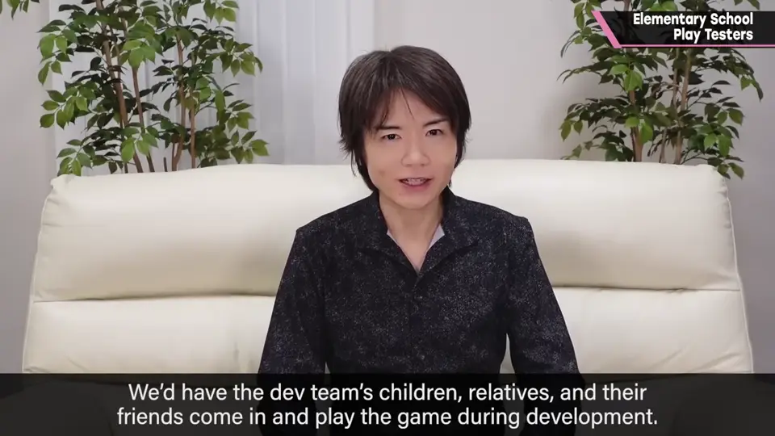
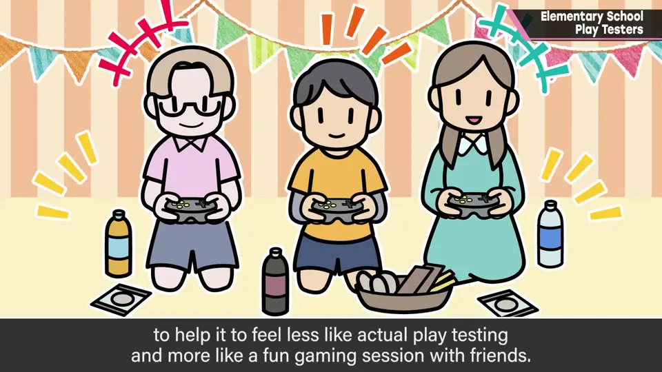
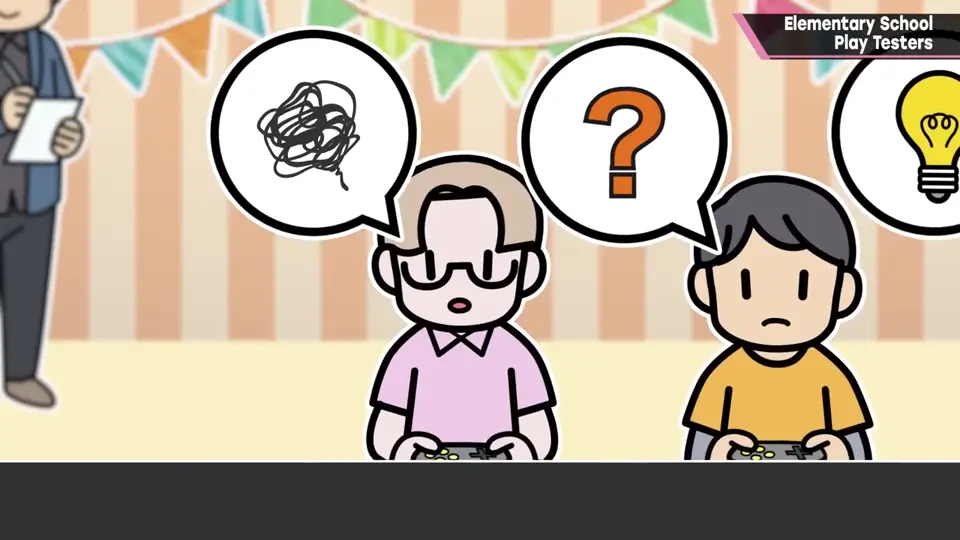
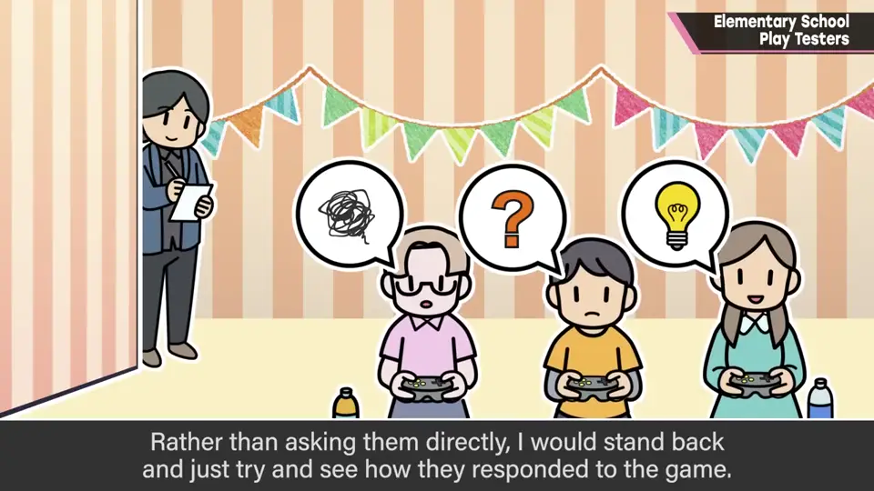
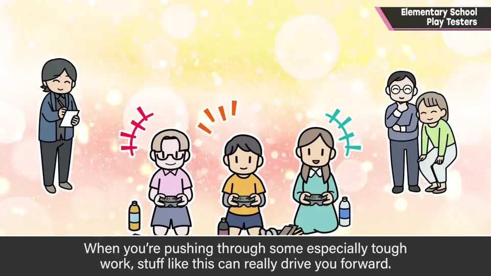
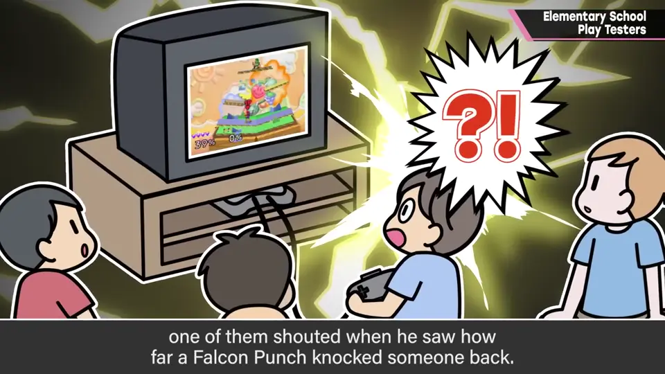
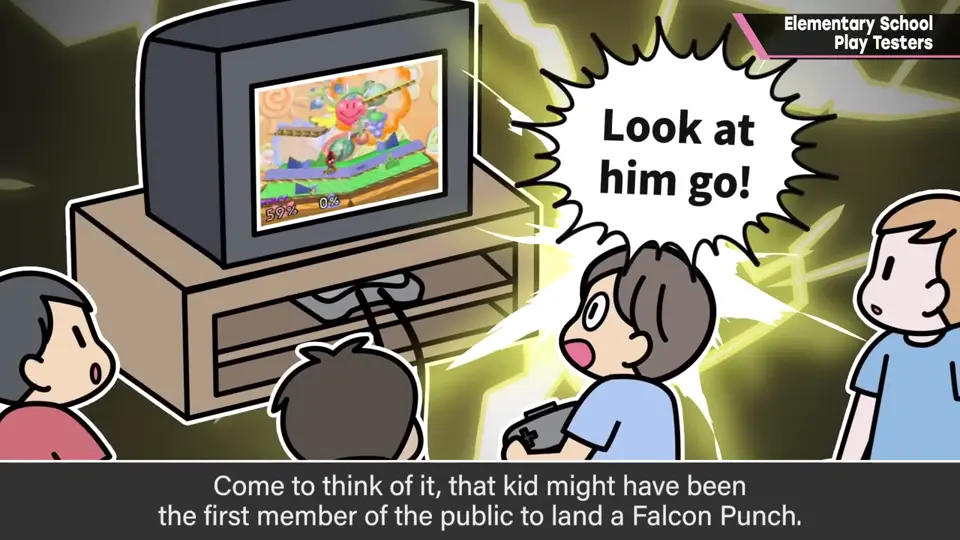

速览
这个时代很难举办了，但樱井介绍一个过去做过且很有效的方法——小学生监测：请员工的孩子、亲戚以及他们的朋友玩开发中的游戏。也准备零食等，理想的是以与「监测」印象不同的、像游乐场一样的气氛进行。和一起来的大人比起来，孩子的反应非常直接，会出现玩游戏时的真实反应：反应好的地方、操作卡住的地方、似乎要玩腻的地方。与其听意见，更像是在实地观察气氛。最重要的是，检查的员工也很开心，尤其在挺过艰难时期的工作时，无疑是一针强心剂。遗憾的是现在是 SNS 时代，即使不说这个，也要求特别高的保密性，还要考虑小学生的安全保障等，已经很难举办，现在没在做；但如果允许，他认为最好做。题外话：初代《大乱斗》的小学生监测中，有个孩子在出拳命中时，对打飞的力度大叫：「好厉害，竟然飞这么远！」非常兴奋——想来那可能是第一个打中 Falcon Punch 的普通人。那孩子现在也成了社会人吧，自己也老了。总之，条件允许的人可以做做小学生监测。
1. 小学生监测 0:03
这个时代很难举办了，但樱井介绍一个过去做过、效果很好的方法——小学生监测：请员工的孩子、亲戚以及他们的朋友，来玩开发中的游戏。


也准备好零食等，理想的是以与「监测」印象完全不同的、像游乐场一样的气氛进行。
2. 真实的反应 0:34
和一起来的大人比起来，孩子们的反应非常直接，能看到玩游戏的真实反应。


反应好的地方、操作卡住的地方、似乎要玩腻的地方……与其听他们的意见，更像是在现场观察气氛。

3. 如今难以举办 1:03
遗憾的是现在是 SNS 时代。即使不说这个，开发也要求特别高的保密性，还要考虑小学生的安全等，已经很难举办，现在没有在做。
但如果条件允许，他认为最好去做。
4. 题外话：第一个打中 Falcon Punch 的普通人 1:27
初代《大乱斗》的小学生监测中，有个孩子在出拳命中时，对打飞的力度大叫：「好厉害，竟然飞这么远！」非常兴奋。


想来，那可能是第一个打中 Falcon Punch 的普通人。那孩子现在也成了社会人吧——自己也上年纪了。
自测题
1. 小学生监测的理想氛围是什么样的？
准备零食，像游乐场一样，而不是一般的测试印象。 0:20
2. 小学生监测主要观察什么？
真实反应：反应好的地方、操作卡住的地方、快玩腻的地方——观察气氛而非听意见。 0:34
3. 为什么现在难以举办？
SNS 时代、需要高度保密，以及要保障小学生安全。 1:03